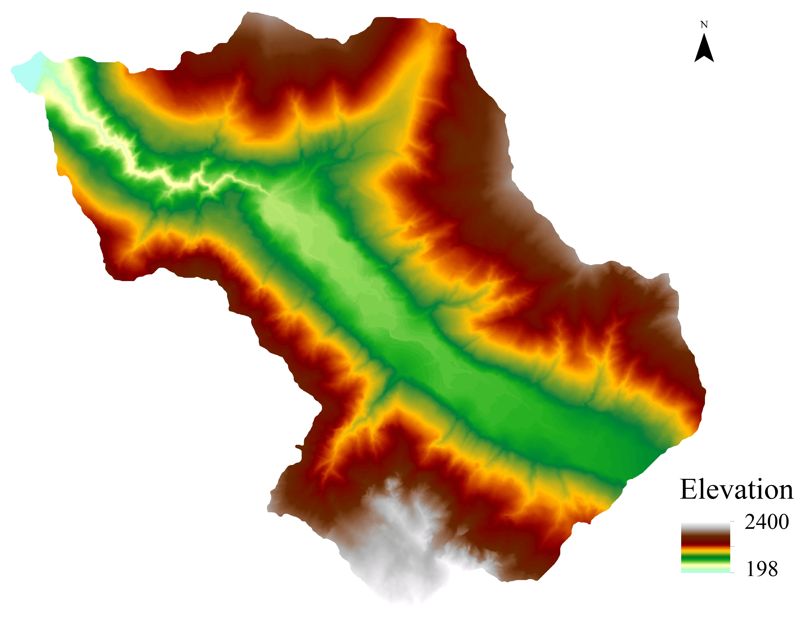
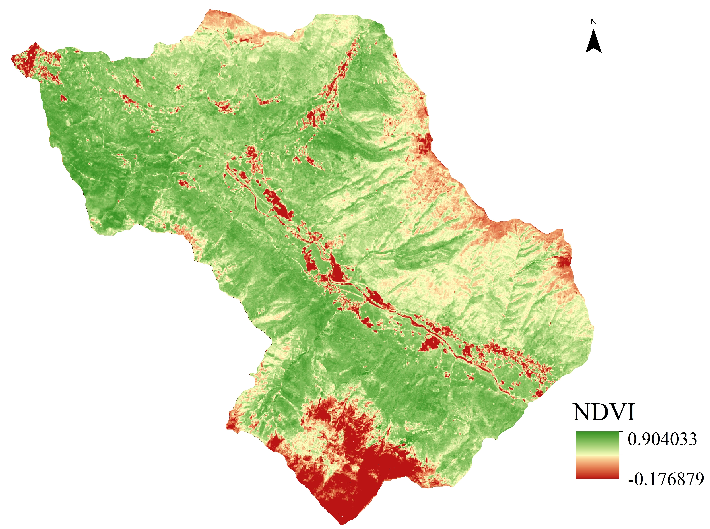
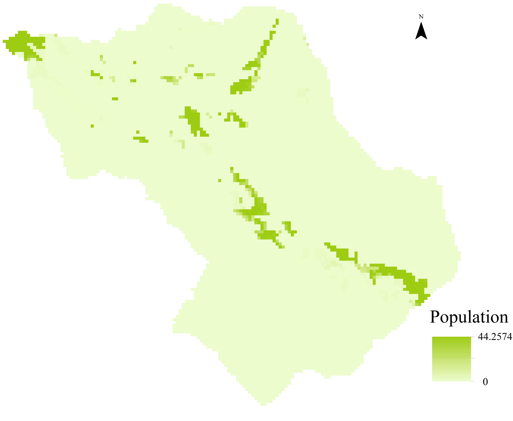
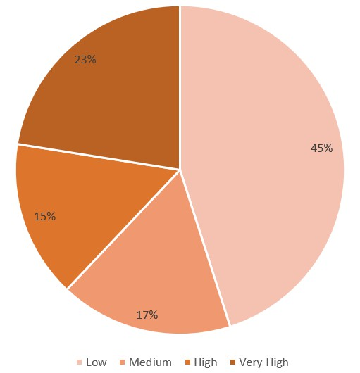

Project Workflow
Our methodology for analyzing air quality across Greece involves several stages, from data collection to creating interactive WebGIS maps.
1. Data Collection
For this project, various datasets were collected to assess air quality across Greece:
- Air Quality Monitoring Data: Measurements from monitoring stations across Greece, including urban, suburban, and rural areas, focusing on key pollutants (PM2.5, PM10, NO2).
- Geographic Data: Administrative boundaries, road networks, industrial zones, population density, and topographic information.
- Meteorological Data: Wind patterns, precipitation, temperature records that influence pollution dispersion.
- Land Use Data: Urban areas, agricultural lands, forests, and other land use categories.
- Population Statistics: Demographic data, including vulnerable populations (elderly, children, those with respiratory conditions).
- Tourism Data: Seasonal visitor statistics to account for population fluctuations, especially in island and coastal areas.
2. Data Processing and Integration

The collected datasets were processed and integrated to ensure compatibility and accuracy:
- Spatial Harmonization: All data layers were projected to a common coordinate system (EGSA87/Greek Grid) for accurate spatial analysis.
- Temporal Alignment: Time series data were synchronized to enable consistent temporal analysis of air quality patterns.
- Data Cleaning: Outliers and erroneous measurements were identified and addressed using statistical methods.
- Gap Filling: Missing data were estimated using interpolation techniques appropriate for each data type.
- Integration: Multiple data sources were combined into a unified geodatabase for analysis.
3. Spatial Analysis and Modeling

Several analytical approaches were employed to understand air pollution distribution:
- Spatial Interpolation: Methods like Inverse Distance Weighting (IDW) and Kriging were used to estimate pollution levels between monitoring stations.
- Land Use Regression: Models relating pollutant concentrations to land use characteristics and proximity to emission sources.
- Dispersion Modeling: Incorporating meteorological data to simulate how pollutants disperse from their sources across Greece's diverse topography.
- Seasonal Variation Analysis: Examining how pollution patterns change across seasons, accounting for tourism impacts, heating practices, and wildfire events.
- Hotspot Identification: Statistical methods to identify areas with significantly elevated pollution levels.
4. Exposure and Risk Assessment

Population exposure to air pollution was evaluated through:
- Population Overlay Analysis: Combining population density data with pollutant concentration maps.
- Vulnerability Assessment: Identifying areas with high concentrations of sensitive populations.
- Health Risk Modeling: Applying established dose-response relationships to estimate potential health impacts.
- Seasonal Impact Assessment: Evaluating how seasonal factors (tourism influx, heating patterns) affect population exposure.
5. WebGIS Implementation

The analysis results were presented through an interactive WebGIS platform:
- Server Setup: Configuring GeoServer to serve spatial data through WMS and WFS services.
- Layer Styling: Creating appropriate symbolization for the various pollution and risk maps.
- Interactive Elements: Implementing features such as layer toggling, pop-up information, and transparency controls.
- User Interface Design: Developing an intuitive interface accessible to both technical and non-technical users.
- Documentation: Creating legends, explanatory text, and methodological notes to assist users in interpreting the maps.
6. Validation and Quality Control

To ensure the reliability of our results:
- Cross-Validation: Testing interpolation and model results against known measurements.
- Sensitivity Analysis: Evaluating how changes in input parameters affect the final results.
- Expert Review: Consulting with air quality specialists to assess the validity of our approach and findings.
- Uncertainty Mapping: Documenting areas of higher uncertainty in our pollution estimates.